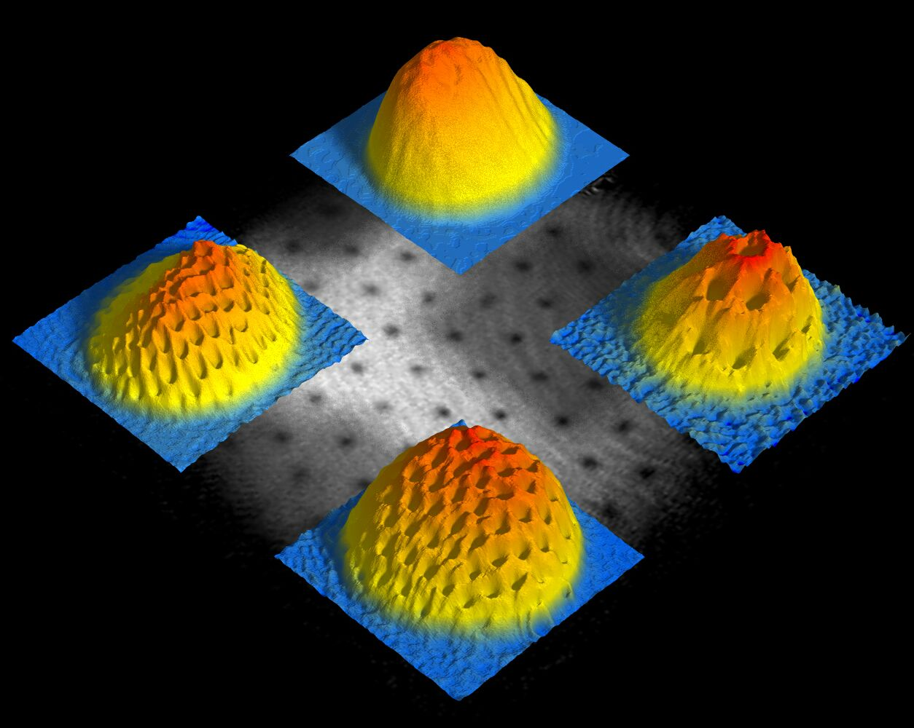

Bose Gas
You know that noninteracting bosons form a Bose condensate: we will see how weak interactions alter this picture, and make a connection to the phenomenon of superfluidity.
1 The Gross–Pitaevskii Approximation
Our first attack on the problem is variational. It’s very easy to come up with a variational wavefunction for the ground state of a Bose gas: put all the particles in the same single particle state!
\[ \Psi(\mathbf{r}_1,\ldots \mathbf{r}_N) = \prod_{j=1}^N \varphi_0(\mathbf{r}_i)= \frac{1}{\sqrt{N!}}\left(a^\dagger(\varphi_0)\right)^N\lvert{\text{VAC}}\rangle. \tag{1}\]
A state with a macroscopic number of particles in a single particle state is known as a Bose condensate. You have probably studied the statistical mechanics of an ideal Bose gas before: the main feature is a condensation temperature below which macroscopic occupation occurs.
We know that if we have a noninteracting Hamiltonian
\[ H = \sum\left[-\frac{\nabla_i^2}{2m} + V(\mathbf{r}_i)\right], \]
then the ground state has exactly the form Equation 1, with \(\varphi_0(\mathbf{r})\) the ground state of the single particle Hamiltonian. After adding interactions to the Hamiltonian, in the form
\[ H_\text{int.} = \sum_{j<k} U(\mathbf{r}_j-\mathbf{r}_k) = \frac{1}{2}\int d\mathbf{r}_1 d\mathbf{r}_2\, U(\mathbf{r}_1-\mathbf{r}_2)\psi^\dagger(\mathbf{r}_1)\psi^\dagger(\mathbf{r}_2)\psi^{\vphantom{\dagger}}(\mathbf{r}_2)\psi^{\vphantom{\dagger}}(\mathbf{r}_1). \]
it is no longer true that the exact ground state has the form Equation 1, but we can treat \(\varphi_0(\mathbf{r})\) as a variational function that we must find. This leads to the Gross–Pitaevskii equation.
1.1 Gross–Pitaevskii Equation
From now on we will take a model of short-ranged interactions for simplicity
\[ U(\mathbf{r}-\mathbf{r}') = U_0\delta(\mathbf{r}-\mathbf{r}') \]
To implement the variational calculation we need to find
\[ \langle E \rangle = \frac{\langle{\Psi}\rvert H \lvert \Psi \rangle}{\langle{\Psi}\rvert \Psi \rangle} \]
In fact, it turns out to be more convenient to minimize \(\langle{\Psi}\rvert H \lvert \Psi \rangle\), using a Lagrange multiplier to fix the normalization. We have
\[ \begin{align} \langle{\Psi}\rvert H \lvert \Psi \rangle=N \int d\mathbf{r}\left[\frac{1}{2m}|\nabla\varphi_0|^2+V(\mathbf{r})|\varphi_0(\mathbf{r})|^2 \right]\\ +\frac{1}{2}N(N-1)U_0\int d\mathbf{r}|\varphi_0(\mathbf{r})|^4. \end{align} \tag{2}\]
For large \(N\), we can neglect the difference between \(N\) and \(N+1\). Now we want to extremize this functional with respect to \(\varphi_0(\mathbf{r})\), keeping \(\varphi_{0}(\mathbf{r})\) normalized. To do this we introduce a Lagrange multiplier \(\mu N\) (the factor of \(N\) will become clear shortly) and extremize the functional
\[ \langle{\Psi}\rvert H \lvert \Psi \rangle - \mu N \int d\mathbf{r}|\varphi_{0}(\mathbf{r})|^{2}. \]
To find the extremum requires a standard application of the calculus of variations, yielding the equation
\[ \left[-\frac{1}{2m}\nabla^2-\mu+V(\mathbf{r})+NU_0|\varphi_0(\mathbf{r})|^2\right]\varphi_0(\mathbf{r})=0. \tag{3}\]
It’s convenient to deal with the stray factor of \(N\) in Equation 3 by defining \(\varphi(\mathbf{r})\equiv\sqrt{N}\varphi_{0}(\mathbf{r})\). \(\varphi(\mathbf{r})\) is known as the condensate wavefunction or order parameter. Later we will give a more general definition that does not depend on the above variational approximation. We have thus obtained the Gross–Pitaevskii equation
\[ \left[-\frac{1}{2m}\nabla^2-\mu+V(\mathbf{r})+U_0|\varphi(\mathbf{r})|^2\right]\varphi(\mathbf{r})=0. \]
It remains to fix the Lagrange multiplier \(\mu\). This is done by demanding that \(\int d\mathbf{r}\,\lvert{\varphi(\mathbf{r})}\rvert^{2}=N\). Since \(\langle{\Psi}\rvert H \lvert \Psi \rangle- \mu \int d\mathbf{r}\lvert{\varphi(\mathbf{r})}\rvert^{2}=\langle{\Psi}\rvert H-\mu \mathsf{N} \lvert \Psi \rangle\) was extremized under general variations, including those that changed \(N\), we must have
\[ \label{bose_static_GPmu} \mu=\frac{\partial\langle{\Psi}\rvert H \lvert \Psi \rangle}{\partial N}, \]
so that \(\mu\) is identified with the chemical potential.
A fundamental effect of the nonlinearity of the GP equation is that there exists a length scale set by the typical value of \(|\varphi(\mathbf{r})|^2\sim n\) and the interaction strength
\[ \xi\equiv \frac{1}{\sqrt{2m n U_0}} \]
This healing length determines the scale over which \(\varphi(\mathbf{r})\) is disturbed by the introduction of a localized potential of scale \(\ll \xi\). It is a fundamental length scale in the system.
Show that near a hard wall, where the condensate wavefunction goes to zero, \(\varphi(\mathbf{r})\) is given by \[ \varphi(x)=\varphi_{\infty}\tanh \frac{x}{\sqrt{2}\xi} \]
where \(x\) is the distance from the wall, and \(\varphi_{\infty}=\sqrt{n_{\infty}}\) is fixed by the density of the condensate far from the wall.
1.2 Some Observables
With the ansatz Equation 1 for the wavefunction, we can obtain various observables without difficulty. The density and current density are
\[ \begin{align} \rho(\mathbf{r})&=|\varphi(\mathbf{r})|^2,\\ \mathbf{j}(\mathbf{r})&=-\frac{i}{2m}\left[\varphi^{*}(\mathbf{r})\left(\nabla\varphi(\mathbf{r})\right)-\left(\nabla\varphi^{*}(\mathbf{r})\right)\varphi(\mathbf{r})\right] \end{align} \]
Alternatively, one may write this is terms of the velocity field of the gas, using \(\mathbf{j}=\rho \mathbf{v}\), and the decomposition of \(\varphi(\mathbf{r})\) into magnitude and phase
\[ \varphi(\mathbf{r})=\sqrt{\rho(\mathbf{r})}e^{i\chi(\mathbf{r})}. \]
We thus find the superfluid velocity
\[ \mathbf{v}_{s}\equiv\frac{1}{m}\nabla\chi. \tag{4}\]
The name is to distinguish this contribution from that arising from thermal excitations. For the moment we are considering zero temperature, so this is all there is.
The usefulness of the Gross–Pitaevskii equations lies in its ability to describe spatially nonuniform situations. Often, nonuniformity is imposed by an external potential, but there is an important class of configurations that are stable – or metastable – for topological reasons.
1.3 Example: Vortex
Since Equation 4 tells us that the superfluid velocity is a gradient of something, we may expect it to be irrotational
\[ \nabla\times \mathbf{v}_s = 0, \]
or equivalently to have vanishing circulation
\[ \oint \mathbf{v}_s\cdot d\mathbf{l}=0 \]
around any closed loop. However, it is possible for the phase of the wavefunction to increase by a multiple of \(2\pi\) around a closed loop, which still gives a single-valued condensate wavefunction since \(\varphi(\mathbf{r})=\sqrt{\rho(\mathbf{r})}e^{i\chi(\mathbf{r})}\). Thus in general the circulation
\[ \oint \mathbf{v}_s\cdot d\mathbf{l}=\frac{2\pi \ell}{m},\quad \ell\in\mathbb{Z}, \]
which is known as the Onsager–Feynmann quantization condition. A localized configuration with finite circulation is called a vortex in fluid dynamics, but in a normal fluid there is no reason for the circulation to be quantized. Restoring Planck’s constant just this once
\[ \oint \mathbf{v}_s\cdot d\mathbf{l}=\frac{h\ell}{m},\quad \ell\in\mathbb{Z}, \]
shows that this is a truly quantum phenomenon.
A non-zero winding of the phase requires that \(\rho(\mathbf{r})\) vanishes at a point (in two dimensions) or on a line (in three). Let’s see how such configurations are described by the Gross–Pitaevskii theory.
We are going to look for 2D solutions where the phase winds \(\ell\) times as we encircle the origin
\[ \varphi(r,\theta)\xrightarrow{r\to\infty} \sqrt{n} e^{i\ell\theta}. \tag{5}\]
We parameterize the solution as \(\varphi(r,\theta) = \sqrt{n} f(r/\xi)e^{i\ell\theta}\), measuring distances in terms of the healing length. Substituting into the Gross–Pitaevskii equation gives an equation in \(s\equiv r/\xi\).
\[ -f'' -\frac{f'}{s} + \frac{\ell^2 f}{s^2} - f +f^3 =0. \]
We take \(\mu = U_0 n\) to get the behaviour Equation 5 at infinity.
Without finding the solution explicitly, show that \(f(s)\sim s^\ell\) for small \(s\), and \(f(s\to\infty) \to 1\).
The region of suppressed density, of characteristic size \(\xi\), is called the vortex core. In three dimensions, the vortex core is a line.
We can find the energy of the vortex state by substituting the solution back into the energy functional Equation 2 to find the energy excess relative to a uniform state of density \(n\)
\[ \Delta E = \int d\mathbf{r}\left[\frac{n^2}{2m\xi^2}(f')^2+\frac{U}{2}n^2 \left(f^2-1\right)^2\right] + \frac{n^2}{2m}\int d\mathbf{r}\, f^2(\nabla\chi)^2. \]
The first integral is finite, and arises purely from the departure of the density away from its bulk value. The second represents the contribution to the kinetic energy arising from the winding of the vortex’s phase. Since we have
\[ \nabla \chi = \frac{\ell}{r}\hat{\mathbf{e}}_\theta, \]
this contribution to the energy is logarithmically divergent.
\[ \Delta E = \text{const.} + \frac{\pi n \ell^2}{m}\log\left(\frac{L}{\xi}\right). \]
There is far-reaching analogy between the superfluid velocity fields of vortices and the magnetostatics of current-carrying wires,
| Vortices | Magnetostatics |
|---|---|
| Vortex cores | Wires |
| Superfluid velocity \(\mathbf{v}_s\) | Magnetic field, \(\mathbf{B}\) |
| Kinetic Energy | Magnetostatic Energy |
Vortices with \(\lvert{\ell}\rvert>1\) are generally unstable, and will break into multiple vortices of winding \(\ell=\pm 1\). Like vortices repel each other, and can form spectacular vortex lattices, akin to crystals.

Vortices are one manifestation of the phenomenon of superfluidity: persistent flow without resistance. The true ground state of the system does not have such flows, of course, so these flows are only metastable (as long as rotational symmetry is broken, so that angular momentum is not conserved). In the case of the vortex, it can only decay by its core leaving the system. An even simpler example is provided by currents flowing in a ring, a situation studied in Problem Set 2, which illustrates the important role played by repulsive interactions.
2 Bogoliubov Theory
How can we improve upon the Gross–Pitaevskii approximation? From now on we focus on a uniform condensate with no external potential \(V(\mathbf{r})\), in which case the condensate wavefunction is just a constant \(\varphi(\mathbf{r})=\sqrt{n}\). As usual we work in a plane wave basis, where the Hamiltonian takes the form
\[ H =\sum_\mathbf{k}\epsilon(\mathbf{k})a^\dagger_\mathbf{k}a^{\vphantom{\dagger}}_\mathbf{k}+ \overbrace{\frac{U_0}{2V}\sum_{\mathbf{k}_1+\mathbf{k}_2=\mathbf{k}_3+\mathbf{k}_4} a^\dagger_{\mathbf{k}_1}a^\dagger_{\mathbf{k}_2}a^{\vphantom{\dagger}}_{\mathbf{k}_3}a^{\vphantom{\dagger}}_{\mathbf{k}_4}}^{\equiv H_\text{int}}, \]
with \(\epsilon(\mathbf{k})=\mathbf{k}^2/2m\), and \(V\) the volume. The Gross–Pitaevskii approximation to the ground state is
\[ \lvert{\Psi_\text{GP}}\rangle = \frac{1}{\sqrt{N!}}\left(a^\dagger_0\right)^N\lvert{\text{VAC}}\rangle. \]
When \(H_\text{int}\) acts on this state, the only terms that contribute are those with \(\mathbf{k}_3=\mathbf{k}_4=0\)
\[ H_\text{int}\lvert{\Psi_\text{GP}}\rangle = \frac{U_0}{2V}\sum_{\mathbf{k}} a^\dagger_{\mathbf{k}}a^\dagger_{-\mathbf{k}}a^{\vphantom{\dagger}}_{0}a^{\vphantom{\dagger}}_{0}\lvert{\Psi_\text{GP}}\rangle. \]
Thus, if we want a better wavefunction, we are going to have to add some \((+\mathbf{k}, -\mathbf{k})\) pairs!
2.1 Bogoliubov Hamiltonian
When interactions are weak, we expect that the true ground state is close to \(\lvert{\Psi_\text{GP}}\rangle\), so that most of the particles remain in the zero momentum state, with relatively few pairs created. Remembering that
\[ a^{\vphantom{\dagger}}\lvert{N}\rangle = \sqrt{N}\lvert{N-1}\rangle,\quad a^\dagger\lvert{N}\rangle = \sqrt{N+1}\lvert{N+1}\rangle, \label{bose_aN} \]
we see that a term in the Hamiltonian with \(a^{\vphantom{\dagger}}_0\) or \(a^\dagger_0\) is going to be more important – on account of the large occupancy of \(\mathbf{k}=0\) – than a term without. For this reason we divide up the interaction Hamiltonian according to the number of occurrences of these operators
\[ \begin{align} H_\text{int} = &\frac{U_0}{2V}a^\dagger_0a^\dagger_0a^{\vphantom{\dagger}}_0a^{\vphantom{\dagger}}_0 \\\nonumber &+\frac{U_0}{2V}\sum_{\mathbf{k}\neq0}\left[a^\dagger_{\mathbf{k}}a^\dagger_{-\mathbf{k}}a^{\vphantom{\dagger}}_{0}a^{\vphantom{\dagger}}_{0} + a^\dagger_{0}a^\dagger_{0}a^{\vphantom{\dagger}}_{\mathbf{k}}a^{\vphantom{\dagger}}_{-\mathbf{k}}+4a^\dagger_\mathbf{k}a^\dagger_0a^{\vphantom{\dagger}}_0a^{\vphantom{\dagger}}_\mathbf{k}\right]\\\nonumber &+\frac{U_0}{V}\sum_{\substack{\mathbf{k}_1=\mathbf{k}_2+\mathbf{k}_3\\ \mathbf{k}_{1,2,3}\neq 0}}\left[a^\dagger_{\mathbf{k}_3}a^\dagger_{\mathbf{k}_2}a^{\vphantom{\dagger}}_{\mathbf{k}_1}a^{\vphantom{\dagger}}_0 +a^\dagger_0a^\dagger_{\mathbf{k}_1}a^{\vphantom{\dagger}}_{\mathbf{k}_2}a^{\vphantom{\dagger}}_{\mathbf{k}_3}\right]\\\nonumber &+\frac{U_0}{2V}\sum_{\substack{\mathbf{k}_1+\mathbf{k}_2=\mathbf{k}_3+\mathbf{k}_4\\ \mathbf{k}_{1,2,3,4}\neq 0}} a^\dagger_{\mathbf{k}_1}a^\dagger_{\mathbf{k}_2}a^{\vphantom{\dagger}}_{\mathbf{k}_3}a^{\vphantom{\dagger}}_{\mathbf{k}_4}. \end{align} \]
The Gross–Pitaevskii approximation corresponds to the first term. We are now going to additionally keep the second term, and neglect the third and fourth. Thus we study the Hamiltonian
\[ \begin{align} H_\text{pair} &= \sum_\mathbf{k}\epsilon(\mathbf{k})a^\dagger_\mathbf{k}a^{\vphantom{\dagger}}_\mathbf{k}+\frac{U_0}{2V}a^\dagger_0a^\dagger_0a^{\vphantom{\dagger}}_0a^{\vphantom{\dagger}}_0 \nonumber\\ &\quad+\frac{U_0}{2V}\sum_{\mathbf{k}\neq0}\left[a^\dagger_{\mathbf{k}}a^\dagger_{-\mathbf{k}}a^{\vphantom{\dagger}}_{0}a^{\vphantom{\dagger}}_{0} + a^\dagger_{0}a^\dagger_{0}a^{\vphantom{\dagger}}_{\mathbf{k}}a^{\vphantom{\dagger}}_{-\mathbf{k}}+4a^\dagger_\mathbf{k}a^\dagger_0a^{\vphantom{\dagger}}_0a^{\vphantom{\dagger}}_\mathbf{k}\right]. \end{align} \tag{6}\]
The second line describes the movement of pairs between zero momentum and \((+\mathbf{k},-\mathbf{k})\). To separate as much as possible the \(\mathbf{k}\neq 0\) modes from the \(\mathbf{k}=0\) mode we use
\[ a^\dagger_0a^{\vphantom{\dagger}}_0 = N - N',\quad N'\equiv \sum_{\mathbf{k}\neq 0} N_\mathbf{k} \]
so that
\[ a^\dagger_0a^\dagger_0a^{\vphantom{\dagger}}_0a^{\vphantom{\dagger}}_0 = N(N-1) - 2N'N_0+O(N_0^0 ). \]
In this way, Equation 6 becomes
\[ \begin{align} H_\text{pair} = &N\epsilon(0)+\frac{U_0}{2V}N(N-1) \nonumber\\\nonumber &+\sum_{\mathbf{k}\neq 0}\left(\left[\epsilon(\mathbf{k})-\epsilon(0)\right]a^\dagger_\mathbf{k}a^{\vphantom{\dagger}}_\mathbf{k}\right.\\ &\left.+\frac{U_0}{2V}\left[a^\dagger_{\mathbf{k}}a^\dagger_{-\mathbf{k}}a^{\vphantom{\dagger}}_{0}a^{\vphantom{\dagger}}_{0} + a^\dagger_{0}a^\dagger_{0}a^{\vphantom{\dagger}}_{\mathbf{k}}a^{\vphantom{\dagger}}_{-\mathbf{k}}+2a^\dagger_\mathbf{k}a^\dagger_0a^{\vphantom{\dagger}}_0a^{\vphantom{\dagger}}_\mathbf{k}\right]\right). \end{align} \tag{7}\]
Even though \(\epsilon(0)=0\) for the situation we are interested in right now, we have included the general case in Equation 7 to emphasize that it is the energy difference between \(0\) and \(\mathbf{k}\) that is important: any energy offset appears as a constant in the first term.
Even now it’s not so easy to solve this problem. One last vital simplification is needed. We are going to replace the operators \(a^\dagger_0\), \(a^{\vphantom{\dagger}}_0\) with \(\sqrt{N}\), giving a quadratic Hamiltonian. That may sound like a pretty odd thing to do: after all, the resulting Hamiltonian no longer conserves the number of particles! Let’s see why this is a good approximation.
Consider the action of the Hamiltonian Equation 6 on a product state of the form \(\lvert{\Psi'}\rangle\otimes\lvert{N_0}\rangle_0\), where \(\lvert{\Psi'}\rangle\) lives in the many body Hilbert space made from non-zero momentum single particle states and \(\lvert{N_0}\rangle_0\) has \(N_0\) particles in the zero momentum state.
The action of \(a^\dagger_\mathbf{k}a^{\vphantom{\dagger}}_0\) on this state is
\[ \begin{align} a^\dagger_\mathbf{k}a^{\vphantom{\dagger}}_0\lvert{\Psi'}\rangle\otimes\lvert{N_0}\rangle_0 &= \left(a^\dagger_\mathbf{k}\lvert{\Psi'}\rangle\right)\otimes a^{\vphantom{\dagger}}_0\lvert{N_0}\rangle_0\nonumber\\ &= \left(a^\dagger_\mathbf{k}\lvert{\Psi'}\rangle\right)\otimes \sqrt{N_0}\lvert{N_0-1}\rangle_0. \end{align} \]
Likewise
\[ \begin{align} a^{\vphantom{\dagger}}_\mathbf{k}a^\dagger_0\lvert{\Psi'}\rangle\otimes\lvert{N_0}\rangle_0 &= \left(a^{\vphantom{\dagger}}_\mathbf{k}\lvert{\Psi'}\rangle\right)\otimes a^\dagger_0\lvert{N_0}\rangle_0 \nonumber\\ &= \left(a^{\vphantom{\dagger}}_\mathbf{k}\lvert{\Psi'}\rangle\right)\otimes \sqrt{N_0+1}\lvert{N_0+1}\rangle_0. \end{align} \]
Since \(N_0\) is assumed to be large, we ignore the difference between \(N_0\) and \(N_0+1\). To be more precise, we are assuming that in the states we are going to find, \(N_0\) will not fluctuate substantially. If this is the case, the matrix elements of \(H_\text{pair}\) are approximately unchanged when we make the replacement mentioned above, leaving us with the Bogoliubov Hamiltonian
\[ \begin{aligned} H_\text{pair} &= N\epsilon(0)+\frac{U_0}{2V}N(N-1) \nonumber\\ &+\sum_{\mathbf{k}\neq 0}\left(\left[\tilde\epsilon(\mathbf{k})+U_0n_0\right]a^\dagger_\mathbf{k}a^{\vphantom{\dagger}}_\mathbf{k}+\frac{U_0n_0}{2}\left[a^\dagger_{\mathbf{k}}a^\dagger_{-\mathbf{k}} + a^{\vphantom{\dagger}}_{\mathbf{k}}a^{\vphantom{\dagger}}_{-\mathbf{k}}\right]\right). \end{aligned} \tag{8}\]
where \(n_0 = N_0/V\) is the density of particles in the zero momentum state, and we have defined \(\tilde\epsilon(\mathbf{k})\equiv\epsilon(\mathbf{k})-\epsilon(0)\). The Hamiltonian Equation 8 can be diagonalized by a Bogoliubov transformation.
2.2 Bogoliubov transformation
This is a change of variables that arises often in many body physics, so we’ll take some time to introduce it in a general context. Suppose we have a Hermitian operator that is quadratic in two bosons \(a^{\vphantom{\dagger}}_{1,2}\) with the following form
\[ h = \epsilon\left[a^\dagger_1a^{\vphantom{\dagger}}_1+a^\dagger_2a^{\vphantom{\dagger}}_2\right] + \delta\left[a^\dagger_1a^\dagger_2+a^{\vphantom{\dagger}}_1a^{\vphantom{\dagger}}_2\right]. \]
It’s convenient to write this as
\[ h = \begin{pmatrix} a^\dagger_1 & a^{\vphantom{\dagger}}_2 \end{pmatrix} \begin{pmatrix} \epsilon & \delta \\ \delta & \epsilon \end{pmatrix} \begin{pmatrix} a^{\vphantom{\dagger}}_1 \\ a^\dagger_2 \end{pmatrix}-\epsilon \]
It is possible to express \(h\) in terms of some new bosons \(b^{\vphantom{\dagger}}_{1,2}\) in the form
\[ h = \Omega\left[b^\dagger_1b^{\vphantom{\dagger}}_1+b^\dagger_2b^{\vphantom{\dagger}}_2\right] +\text{const.} \]
(because then the spectrum is obvious). We look to express the new bosons linearly in terms of the old as follows
\[ \begin{pmatrix} b^{\vphantom{\dagger}}_1 \\ b^\dagger_2 \end{pmatrix}= \Lambda \begin{pmatrix} a^{\vphantom{\dagger}}_1 \\ a^\dagger_2 \end{pmatrix} \]
where \(\Lambda\) is some \(2\times 2\) matrix. What conditions should \(\Lambda\) satisfy?
Show that if we want the new bosons \(b^{\vphantom{\dagger}}_{1,2}\) to satisfy the same commutation relations as the original \(a_{1,2}\), we must have \[ \Lambda^\dagger \sigma_3 \Lambda = \sigma_3 \]
The following parameterization satisfies this condition and is sufficiently general for our needs
\[ \Lambda= \begin{pmatrix} \cosh\kappa & \sinh\kappa \\ \sinh\kappa & \cosh\kappa \end{pmatrix}. \]
Notice the differences from a rotation matrix:
- Hyperbolic instead of trignometric functions
- No sign difference between the off digaonal elements.
Show that \[ \begin{align} \tanh 2\kappa = \frac{\delta}{\epsilon},\qquad \Omega = \sqrt{\epsilon^2-\delta^2\nonumber}\\ h = \Omega\left[b^\dagger_1b^{\vphantom{\dagger}}_1+b^\dagger_2b^{\vphantom{\dagger}}_2\right] + \Omega - \epsilon. \end{align} \]
The form of \(\Omega\) is most easily understood by noting that the transformation preserves the determinant (\(\det\Lambda=1\)).
What happens if \(\delta>\epsilon\)?
What changes if \(\begin{pmatrix} \epsilon & \delta \\ \delta & \epsilon \end{pmatrix}\longrightarrow \begin{pmatrix} \epsilon_1 & \delta \\ \delta & \epsilon_2 \end{pmatrix}\)?
Applying the same logic to our Hamiltonian ?@eq-HY gives
\[ b^{\vphantom{\dagger}}_\mathbf{p}=a^{\vphantom{\dagger}}_\mathbf{p}\cosh\kappa_\mathbf{p}+a^\dagger_{-\mathbf{p}}\sinh\kappa_\mathbf{p}\nonumber\\ \qquad \tanh2\kappa_\mathbf{p}=\frac{n_0 U_0}{\tilde\epsilon(\mathbf{p})+n_0 U_0}, \]
(make sure you understand where the \(1/2\) went!) and
\[ H=E_0+\sum_{\mathbf{p}\neq 0}\omega(\mathbf{p})b^\dagger_\mathbf{p} b^{\vphantom{\dagger}}_\mathbf{p}. \]
Here \(\omega(\mathbf{p})\) is the Bogoliubov dispersion relation
\[ \omega(\mathbf{p}) = \sqrt{\tilde\epsilon(\mathbf{p})\left(\tilde\epsilon(\mathbf{p})+2U_0n_0\right)}, \]
and the ground state energy is
\[ E_0=\frac{1}{2}nU_0 N+\sum_{\mathbf{p}\neq 0}\frac{1}{2}\left[\omega(\mathbf{p})-\tilde\epsilon(\mathbf{p})-n_0U_0\right]. \]
Somewhat annoyingly, this integral is divergent in the ultraviolet. However, this is actually nothing to do with the many body physics of the problem, but is rather related to the need to regularize a \(\delta\)-function potential in three dimensions (see Problem Set 2. The cure is described in the Appendix, but it isn’t too important in what follows.
2.3 The Ground State
So far, our ground state is just defined by the condition that it is a vacuum of Bogoliubov excitations
\[ b^{\vphantom{\dagger}}_\mathbf{k}\lvert{0}\rangle=\left(\cosh\kappa_\mathbf{k}a^{\vphantom{\dagger}}_\mathbf{k}+\sinh\kappa_\mathbf{k}a^\dagger_{-\mathbf{k}}\right)\lvert{0}\rangle=0. \]
But what does it look like? A state (unnormalized) that satisfies the above equation is
\[ \lvert{0}\rangle=\prod_{\mathbf{k}\neq 0} \exp\left(-\frac{1}{2}\tanh\kappa_\mathbf{k}a^\dagger_{\mathbf{k}}a^\dagger_{-\mathbf{k}}\right)\lvert{\Psi_\text{GP}}\rangle \tag{9}\]
Show this. If you’ve seen coherent states before, remember that the state \(e^{\alpha a^\dagger}\lvert{\text{VAC}}\rangle\) is an eigenstate of \(a^{\vphantom{\dagger}}\) with eigenvalue \(\alpha\).
The form Equation 9 shows explicitly that the state consists of a superposition of pairs excited out of the \(\mathbf{k}=0\) condensate. As we’ve discussed, we don’t actually keep track of the loss of particles from the condensate in the Bogoliubov approximation, on the assumption that it is small.
We can get some feeling for the properties of the ground state by considering the density fluctuations. Recall that the Fourier components of the density operator are
\[ \rho_\mathbf{q}= \sum_\mathbf{k}a^\dagger_{\mathbf{k}-\mathbf{q}}a^{\vphantom{\dagger}}_\mathbf{k}. \]
On the basis of the logic that we’ve been following so far, the most important terms will be those where one of \(a^\dagger_{\mathbf{k}-\mathbf{q}}\) or \(a^{\vphantom{\dagger}}_\mathbf{k}\) acts on the condensate. Thus
\[ \rho_\mathbf{q}\sim \sqrt{N}\left(a^\dagger_{-\mathbf{q}} + a^{\vphantom{\dagger}}_{\mathbf{q}}\right) = \sqrt{N}e^{-\kappa_\mathbf{q}} \left(b^\dagger_{-\mathbf{q}} + b^{\vphantom{\dagger}}_{\mathbf{q}}\right), \]
where
\[ e^{-\kappa_\mathbf{q}} = \sqrt{\frac{\tilde\epsilon(\mathbf{q})}{\omega(\mathbf{q})}}. \]
The density fluctuations in the ground state are then
\[ \langle{0}\rvert \rho_{-\mathbf{q}}\rho_{\mathbf{q}} \lvert 0 \rangle = N\frac{\tilde\epsilon(\mathbf{q})}{\omega(\mathbf{q})}\xrightarrow{\mathbf{q}\to 0} \frac{N\lvert{\mathbf{q}}\rvert}{2mc}. \]
On the right hand side we have used the low momentum form of the Bogoliubov dispersion
\[ \omega(\mathbf{q})\xrightarrow{\mathbf{q}\to 0} c\lvert{\mathbf{q}}\rvert \]
where \(c = \sqrt{\frac{n_0U_0}{m}}\) is the speed of sound. We see that the density fluctuations vanish as the wavevector goes to zero. This is to be contrasted with the result that we would find in the Gross–Pitaevskii ground state (or ground state of the ideal gas)
\[ \langle{0}\rvert \rho_{-\mathbf{q}}\rho_{\mathbf{q}} \lvert 0 \rangle = N. \]
corresponding to uncorrelated, Poissonian fluctuations of number inside any volume of the gas. If we were to take a snapshot of the particles at any instant in the interacting gas, we would see a picture similar to the image of the Laughlin state in Lecture 2.
The other qualitatively new feature of the Bogoliubov ground state is that the zero momentum state is depleted. We find the momentum distribution by first writing the number operator \(N_\mathbf{p}=a^\dagger_{\mathbf{p}}a^{\vphantom{\dagger}}_{\mathbf{p}}\) in terms of the Bogoliubov quasiparticles
\[ a^\dagger_{\mathbf{p}}a^{\vphantom{\dagger}}_{\mathbf{p}}=(b^\dagger_\mathbf{p}\cosh\kappa_{\mathbf{p}}-b^{\vphantom{\dagger}}_{-\mathbf{p}}\sinh\kappa_{\mathbf{p}})(b^{\vphantom{\dagger}}_\mathbf{p}\cosh\kappa_{\mathbf{p}}-b^\dagger_{-\mathbf{p}}\sinh\kappa_{\mathbf{p}}), \]
and then finding the average
\[ \langle N_\mathbf{p}\rangle=\langle a^\dagger_{\mathbf{p}}a^{\vphantom{\dagger}}_{\mathbf{p}}\rangle = \sinh^2\kappa_{p}\xrightarrow{ \lvert{\mathbf{p}}\rvert\ll \xi^{-1}}\frac{mc_s}{2\lvert{\mathbf{p}}\rvert}. \]
The radial density distribution \(4\pi p^2 N_\mathbf{p}\) is peaked around \(\xi^{-1}\). Summing over \(\mathbf{p}\) gives the fraction of atoms not in the condensate
\[ \frac{1}{N}\sum_{\mathbf{p}\neq 0} \langle N_\mathbf{p}\rangle=\frac{8}{3\sqrt{\pi}}\sqrt{n a^3}, \]
where we used the Born approximation for the scattering length \(a=\frac{mU_0}{4\pi}\). Excluding the value \(\mathbf{p}=0\) has no effect, because of the vanishing phase space at small momentum in three dimensions.
Under typical experimental conditions in experiments on ultracold atoms the depletion does not much exceed \(0.01\), which justifies the use of the GP approximation. Liquid He\(^{4}\), the first superfluid to be discovered, can be described as an interacting Bose condensate, but the depletion is much larger (the condensate fraction – the fraction of atoms in the condensate – is around 10%). The Bogoliubov approximation does not provide a quantiatively accurate description in this case.
In the previous lecture we met another situation where the depletion can be increased. Applying a lattice effectively reduces the kinetic energy relative to the interaction, and leads eventually to a quantum phase transition out of the superfluid state.
3 Appendix
3.1 Regularizing the ground state energy
To find the ground state energy in the Bogoliubov theory we have to compute the sum
\[ \begin{equation} \sum_{\mathbf{p}\neq 0}\frac{1}{2}\left[\omega(\mathbf{p})-\frac{\mathbf{p}^2}{2m}-n_0U_0\right]. \end{equation} \tag{10}\]
After turning it into an integral in the usual way, we have
\[ \frac{V}{4\pi^2 m}\left[\overbrace{\int_0^\Lambda p^2 \sqrt{p^2\left(p^2+\frac{2}{\xi^2}\right)}dp}^{\equiv I(\Lambda)} - \int_0^\Lambda \left(p^4 + \frac{p^2}{\xi^2}\right) dp \right] \]
where we have introduced an upper cutoff \(\Lambda\) to see what happens as it increases to infinity. The first integral comes from the \(\omega(\mathbf{p})\) in the summand. \(\xi\equiv \frac{1}{\sqrt{2m n U_0}}\) is the healing length as before. Introducing the substitution \(u=p^2\) gives
\[ \begin{align} I(\Lambda) &= \frac{1}{2}\int^{\Lambda^2}_0 u\sqrt{u+\frac{2}{\xi^2}} du \nonumber \\ &= \left[\frac{1}{5}\left(u+\frac{2}{\xi^2}\right)^{5/2}-\frac{2}{3\xi^2} \left(u+\frac{2}{\xi^2}\right)^{3/2}\right]^{\Lambda^2}_0\nonumber \\ &= \frac{\Lambda^5}{5} + \frac{\Lambda^3}{3\xi^2} -\frac{\Lambda}{2\xi^4}+\cdots. \end{align} \tag{11}\] In the expansion we have retained only the terms with positive powers of \(\Lambda\). By comparing with the definition of \(I(\Lambda)\), we can see that these terms arise from the first three terms in the large \(p\) expansion of the integrand
\[ \begin{equation} p^2 \sqrt{p^2\left(p^2+\frac{2}{\xi^2}\right)} = p^4 + \frac{p^2}{\xi^2} - \frac{1}{2\xi^2}. \end{equation} \tag{12}\]
In the original sum Equation 10 the contributions of the first two terms in Equation 12 are cancelled by subtracting \(\frac{1}{2}\left[\frac{\mathbf{p}^2}{2m}+n_0U_0\right]\). This still leaves us with a divergence \(\propto \Lambda\) arising from last term of Equation 12. On the other hand, the sum
\[ E_\text{reg}\equiv\sum_{\mathbf{p}\neq 0}\frac{1} {2}\left[\omega(\mathbf{p})-\tilde\epsilon(\mathbf{p})-n_0U_0+ \frac{(n_0U_0)^2}{2\tilde\epsilon(\mathbf{p})}\right] \]
is finite as \(\Lambda\to \infty\), because all positive powers of \(\Lambda\) cancelled. The value is then given by the lower limit of the expression in Equation 11.
\[ E_\text{reg} = \frac{V}{m\pi^2}\frac{16}{15}(mnU_0)^{5/2} \]
OK, but so what? That isn’t what we wanted. But notice that the regularized energy can be used to write the total energy as
\[ E_0=\frac{1}{2}nU_0 N\left[1-\frac{1}{V}\sum_\mathbf{p}\frac{U_0}{2\tilde\epsilon(\mathbf{p})}\right]+E_\text{reg}. \]
In this form, the term we have added and subtracted can be identified as the contribution to the ground state energy in second order perturbation theory. This is divergent at large momentum for a delta function interaction, but this divergence goes away when we consider a finite range potential (we won’t show this, but it’s not too hard). Assuming that this contribution is finite because the interaction potential has a small (relative to \(\xi\)) but finite range, we can then write
\[ E_0=\frac{1}{2}nN\frac{4\pi}{m}\left(a_0+a_1\right)+\frac{1}{2}n_0N\frac{4\pi}{m}a_0\frac {128}{15\sqrt{\pi}}\left(n a_0^3\right)^{1/2}, \]
where
\[ a_0=(m/4\pi)U_0,\qquad a_1=-(m/4\pi)\frac{U_0^2}{V}\sum_\mathbf{p}\frac{1}{2\tilde\epsilon (\mathbf{p})}. \]
are the first two terms in the Born approximation for the scattering length \(a=a_0+a_1+\cdots\). This strongly suggests that these two terms can really be expressed only in erms of the true scattering length. Notice also that the second term has a weird \(U_0^{5/2}\) dependence on the interaction strength, which is presumably connected to perturbation theory breaking down at the third order (see Problem Set 2).